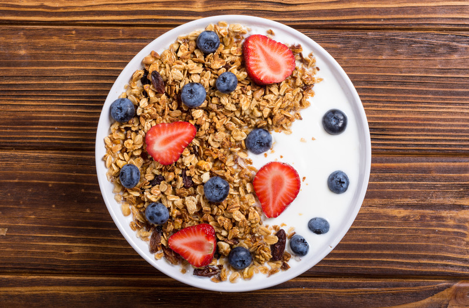

Información sobre la comida
Desayunos
• Pancakes de avena y plátano:
Un desayuno saludable y delicioso, hecho con avena, plátano y un toque de miel.
• Huevos revueltos con espinacas y queso feta:

Huevos revueltos con espinacas frescas y queso feta, ideal para un desayuno lleno de proteínas y nutrientes.
Yogur griego con granola casera y frutos rojos:

Yogur griego natural, acompañado de granola casera y una mezcla de frutos rojos frescos.
Bowl de acai con fruta y coco rallado

Un bol refrescante y nutritivo con acai, frutas tropicales, y un toque de coco rallado.
Tostadas integrales con aguacate y huevo pochado

Tostadas integrales cubiertas con aguacate, huevo pochado y un toque de pimienta negra.
Almuerzos
Ensalada de quinoa con pepino, tomate y garbanzos

Una ensalada refrescante con quinoa, pepino, tomate, garbanzos, y aderezada con aceite de oliva y limón.
Tacos de pescado con col morada

Pescado a la parrilla en tortillas de maíz, con col morada picada y salsa de yogurt.
Arroz integral con verduras salteadas

Arroz integral acompañado de una mezcla de verduras como zanahorias, brócoli, y pimientos.